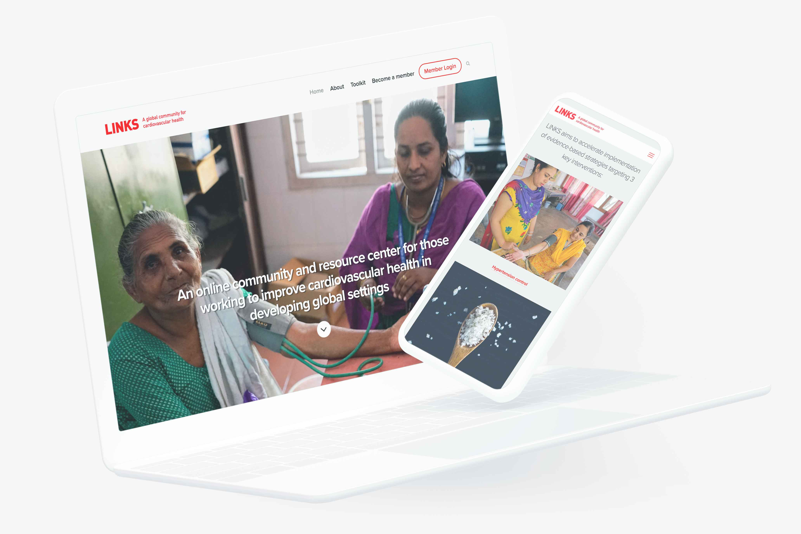

LINKS is a global community for cardiovascular health
LINKS provides resources, support and networking opportunities that support country programs for cardiovascular health. Membership in the LINKS community is free and is designed for those working to improve cardiovascular health in developing global settings.
Join the community for exclusive access to:
- Peer-to-peer contact
- Participation in webinars
- Opportunity to apply for technical assistance or funding support to eligible programs
Learn more at: LINKScommunity.org
Who is behind LINKS?
LINKS is a collaborative effort of the World Health Organization, the CDC Foundation, and Resolve to Save Lives, an initiative of Vital Strategies.
Who is eligible for membership in LINKS?
Professionals associated with governments, academic institutions, civil society organizations or the private sector are welcome to apply. Your organization’s strategies should align with at least one of the following:
Hypertension control: Reporting on hypertension using the WHO HEARTS technical package monitoring indicators, or selecting standard hypertension treatment protocols
Salt reduction: Reduction of population sodium intake through strategies outlined in the WHO SHAKE technical package and appropriate to the country’s primary sources of dietary sodium
Elimination of artificial trans fat: Eliminating trans fatty acids from the food supply as described in the WHO REPLACE technical package